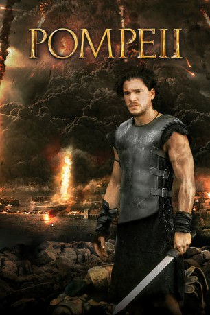

#5425 Pompeii
 
 IMDB-Wertung: 5.6 / 10
IMDB-Wertung: 5.6 / 10  Tomatometer: 27
Tomatometer: 27  Metascore: 0
Metascore: 0 
79 nach Christus: Am Fuß des Vesuvs, einem erloschen geglaubten Vulkan, befindet sich die prächtige Stadt Pompeii. Doch eines schicksalhaften Tages bricht der Vulkan aus und verwandelt die einst blühende Stadt in eine einzige Ascheruine. Der Sklave Milo, der die Katastrophe von einem Schiff aus beobachten konnte, entsagt seinem Herrn Lucretius und macht sich auf, seine große Liebe Cassia und seinen besten Freund zu suchen und mit ihnen zu fliehen.
Jahr: 2014
Dauer: 104 Minuten
FSK: 12
Land: Kanada Studio: Constantin FilmTonspuren: DTS - ,
Untertitel: Deutsch, Englisch,
Auflösung: 1080p (1920x800) Größe: 8796 MB
Genre: Action, Drama, Abenteuer, Liebe, Geschichte
Regisseur: Paul W.S. Anderson
Drehbuch: Black Lagoon Committee
Soundtrack:
Darsteller:
 Kit Harington als Milo
Kit Harington als Milo Carrie-Anne Moss als Aurelia
Carrie-Anne Moss als Aurelia Emily Browning als Cassia
Emily Browning als Cassia Adewale Akinnuoye-Agbaje als Atticus
Adewale Akinnuoye-Agbaje als Atticus- Jessica Lucas als Ariadne
 Jared Harris als Severus
Jared Harris als Severus Joe Pingue als Graecus
Joe Pingue als Graecus Kiefer Sutherland als Corvus
Kiefer Sutherland als Corvus Currie Graham als Bellator
Currie Graham als Bellator- Dylan Schombing als Young Milo
- Maxime Savaria als Biggest Thracian
- Ron Kennell als The Weasel
- Rebecca Eady als Milo's Mother
 Sasha Roiz als Proculus
Sasha Roiz als Proculus- Jean-Francois Lachapelle als Milo's Father
- Jean Frenette als Boss Slaver
- Dalmar Abuzeid als Felix
- Emmanuel Kabongo als African Gladiator
- Kristina Nicoll als Rich Wife #1
- Mark Whelan als Ship's Captain
- Donna Christo als Harbor Mother
- Rodney Alexandre als Gladiator , uncredited
- Jonathan David Bedard als Gladiator , uncredited
 Melantha Blackthorne als Celtic Woman , uncredited
Melantha Blackthorne als Celtic Woman , uncredited- Jimmy Chimarios als Gladiator , uncredited
- Chris Gonsalves als Roman Archer , uncredited
- Shane Clinton Jarvis als Slave / Gladiator , uncredited
 Patrick Kerton als Celtic Gladiator , uncredited
Patrick Kerton als Celtic Gladiator , uncredited- Ben Lewis als Fulvius Fronto , uncredited
 Alain Moussi als Celtic Gladiator , uncredited
Alain Moussi als Celtic Gladiator , uncredited- Jon Rhys als Roman Archer , uncredited
- Michel Issa Rubio als Proclaimer , uncredited
 Attila Sebesy als Gladiator , uncredited
Attila Sebesy als Gladiator , uncredited- Goran Stjepanovic als Nose Break Thracian , uncredited
- Tom Bishop Sr. als Cassia's Carriage Driver
- Brock Johnson als Flashback Centurion
- Janine Theriault als Rich Wife #2
- Anaïs Frenette als Harbor Child
- Thomas Stumpo als Harbor Boy
- Zachary Burke als Proclaimer , uncredited
- Milan Carmona als Roman Boy , uncredited
- Jay Da Costa als Roman Citizen , uncredited
- Derek Herd als Slaver , uncredited
- Peter Hewitt als Archer / Soldier , uncredited
- Johnny Larocque als Soldier , uncredited
- Constantine Meglis als Gladiator / Roman Citizen , uncredited
Datei: X:\2014(N-Z)\Pompeii (2014, FSK12, 1920x800).mkv seit 30.01.2017
Festplatte: HD 2013(I-Z)-2014(A-Z)
 Es gibt insgesamt 163 Filme in der Gruppe '2014(N-Z)'
Es gibt insgesamt 163 Filme in der Gruppe '2014(N-Z)'